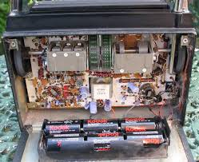
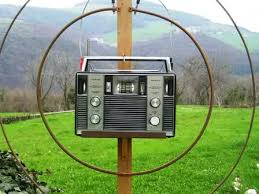

Cosa c'entra una radio in un blog di chimica?
C'entra, c'entra... se l'autore del blog non ha solo l'hobby della chimica!
Ho cercato per anni, prima dell'avvento di eBay, questo strano e famoso ricevitore (famoso, anzi famosissimo per gli adetti ai lavori, s'intende) senza riuscire a trovarlo.
Poi "la Baia" ha fatto il miracolo ed ora vedo che ne passano sul sito in un anno, considerando tutto il mondo, quante sono le dita di una mano.
Nella metà degli anni '60 il dottor Wadley costruì a Pretoria il primo prototipo del ricevitore portatile Wadley Barlow, con un circuito per quei tempi rivoluzionario, ingegnosissimo e altrettanto complicato.
Il ciclo a loop di Wadley, una tripla conversione in un sistema particolare di supereterodina, offre una serie di vantaggi in termini di prestazioni rispetto agli altri circuiti utilizzati comunemente.
In un normale ricevitore la frequenza da ricevere viene mescolata con un'altra frequenza generata nell'interno del ricevitore stesso e ciò genera per "battimento" una terza frequenza, data dalla differenza tra le due prime.
Questa terza frequenza (detta Media Frequenza) viene amplificata dagli stadi successivi e poi trasformata in bassa frequenza, cioè in suoni udibili in altoparlante.
Questo è il funzionamento estremamente riassunto di una supereterodina, ovvero di una radio normale come tutti abbiamo.
Sarebbe troppo complicato anche tentare di riassumere il percorso del segnale che Mr. Wadley ha tradotto in pratica nel suo circuito: vi sono conversioni multiple, generatori di armoniche, oscillatori, filtri ad alta frequenza... e una miriade di complicazioni che guardando lo schema elettrico a prima vista c'è da impazzire!

A che pro allora? Pazzie inutili? Niente affatto: tutta questa complicazione viene tradotta in una eccezionale precisione e stabilità di frequenza, fattori determinanti per l'ascolto delle onde corte, che è la funzione principale di questo ricevitore. Negli anni '60-70 non c'erano circuiti integrati e microprocessori come oggi (che con due lire e cento righe di software ti fanno qualsiasi cosa); allora ottenere un circuito che non variasse minimamente in frequenza col passare del tempo e della temperatura era estremamente difficile...ma Mr.Wadley c'è riuscito alla grande ed ancora lo si apprezza (anzi, forse più adesso di ieri!).
Il ricevitore si presenta fisicamente molto povero, ed è sempre stato questo il suo più grande difetto (ma doveva essere economico, alla portata di ogni farmer sudafricano); è talmente spartano che chi non lo conosce lo scambierebbe subito per una radio portatile tipo "spiaggia" degli anni '70.
Solo aprendolo, e intendendosi di queste cose, si vede l'enorme differenza circuitale!
L'XCR-30 garantisce una copertura di frequenza da 500 kHz a 30 Mhz, ed è in grado di ricevere oltre che in AM anche in SSB (sistema usato dai radioamatori, stazioni costiere, ecc.) e CW (telegrafia).
La sintonia viene fatta con due manopole su scale in Mhz ed in Khz, con definizione minima 5 khz, elevatissima per un ricevitore "non professionale". Inoltre, cosa rarissima, non sono presenti cambi di gamma meccanici: i 30 MHz vengono impostati a uno a uno come fosse una sintonia continua, senza contatti elettrici striscianti.
Il mio esemplare è uno dei primi, con un numero di matricola bassissimo (questi ricevitori hanno perfino un numero di matricola... registrato informalmente in un apposito elenco dei possessori!).

La doppia aureola che circonda l'apparecchio in fotografia non è per santificarlo, ma è un'antenna di tipo "magnetico" (non c'entra niente con le calamite, si chiama così perchè sfrutta la componente magnetica e non elettrica del campo radioelettrico) che ho costruito appositamente per sfruttare al massimo il BW; è un'antenna sintonizzabile con il condensatore variabile che si vede in alto in questa foto e che aumenta enormente la già ottima sensibilità dell'apparecchio.
Per gli appassionati del radioascolto, e degli apparecchi d'epoca, l'XCR-30 è una pietra miliare, che con un po' di buona propagazione in onde corte può portare davvero il mondo in tasca.
3 commenti